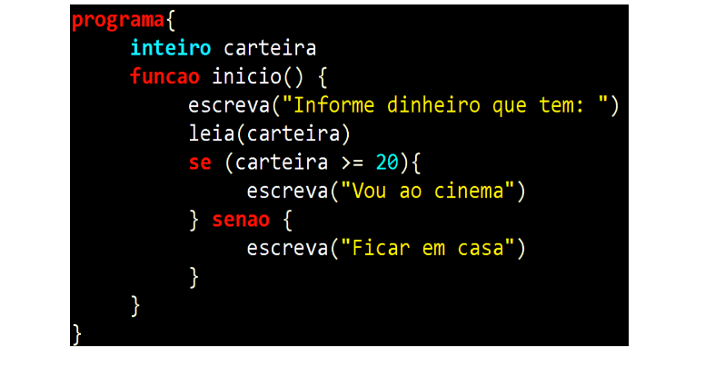
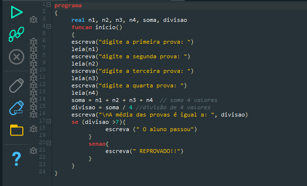
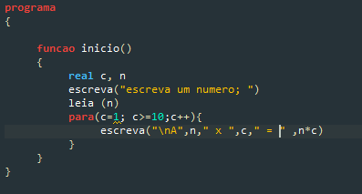

O que é POO
Programação orientada a objetos é um paradigma de programação baseado no conceito de "objetos", que podem conter dados na forma de campos, também conhecidos como atributos, e códigos, na forma de procedimentos, também conhecidos como métodos.
eclipse
Eclipse é uma IDE para desenvolvimento Java, porém suporta várias outras linguagens a partir de plugins como C/C++, PHP, ColdFusion, Python, Scala e Kotlin. Ele foi feito em Java e segue o modelo open source de desenvolvimento de software.>

Estrutura SE
A estrutura de condição se-então, oferece a possibilidade de executarmos uma determinada ação ou comando se o resultado da expressão lógica for verdadeiro e de executarmos uma ação diferente se o resultado da expressão lógica for falso. Para essas situações é utilizado o comando senão, como mostrado abaixo.
Segue a baixo um projeto feito com está estrutura.
Nela usamos da estrutura SE para calcular a a média de um aluno.
Estrutura Case
A estrutura switch case define diversos blocos de execução de instruções para diferentes casos. Esses casos são valores que uma determinada variável “escolhida” pode assumir durante a execução da estrutura, onde dependendo desse valor diferentes instruções deverão ser executadas.

Estrutura Para
O Loop For, em Java, é um dos três tipos de laço de repetição For — como também é chamado. Essas estruturas são utilizadas para executar diversas vezes um mesmo bloco de instruções — e a sequência de comandos é programada para voltar ao seu ponto de origem assim que completada, resumidamente.
